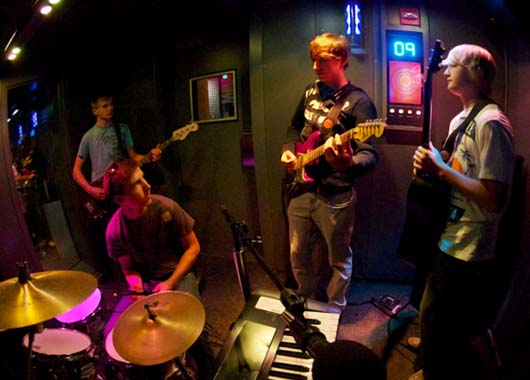

Anna Louise Hill
The Journal
Class Notes
1/22
What Is Interactive Preformance?
Agents- artist, artwork, audience flow of communication: reactive system vs. interactive system 2 agents that are able to interact and engage with other agents.
Preformance:
Music, Theatre, Dance, Circus, Sports (Social Media)
Interaction
Human and Computer, Artist is the Preformer, Audience is the Preformer, Tech and Tech, Interpersonal Interactions and Media (Accidental/ Intentional)
1/23
Live Media: Interactive Technology and Theatre Notes
Interactivity -> Live "Sounds and images stored that will produce a response in a live preformer's actions"
Linear media?
-> devices (cd, vcr, etc.) -> Reactive systems 1. Random Access: The use of various inputs and outputs and being able to have control and manipulation over the content. 2. Trigger and Output: Coordinated control of multiple media elements. -> Inputs and outputs (aka mapping) -> many to many, many to one, one to one 3. Media Manipulation: Manipulation and the relation of variables to "paint" a picture or experience. The participants ability to create change. Preformance with constraints Strengths of both live preformance and media -> the intangible relations of how live vs. personal tech experiences formulate different feelings or emotions towards a preformance or moment A more meaningful intereractive preformance between the preformer and the audience. Incorporating media without comprimising the spontenaity of live Preformance Agents- Preformers, Technology Outside Agents- Audience
1/27
Interactivity and Liveness in Electraucoustic Concert Music by Mike Frengel
The concept and interaction of electrical facilitators and their ability to interect and control or react to live preformance. Agents: Live preformer, electronics, and spectators Attributes of live preformance:
Virtuosity:
Outstanding preformance that is beyonf the norm. Mastery of motor and musical language. The control and combination of such mastery skills provide an enticing and perceptually overwelmign experience.
Fallibility:
Mythos. The ability to fail and literally fall is a characteristic to liv preormance that makes it human and has the audience sitting on the edge of theri seat waiting to watch this obstacle being overcome.
Spontaneous Variability:
The evolution and individual characteristics each artist/ preformer brings forth.
The influence of visual cues:
Workign with music in particular, the ability to create a story and mimic the storyline or the music to create a succinct preformance. All of the above factors placed into a preformance, allow for the appeal of live preformance. The process produces a product whether that be a good or bas reaction. Overall, live preformance alone is visually, mentally and physically stimulating and when you add a factor in such as electronics, adds to the works complexity and also adds another stimulating factor in, "how'd- they- do- it?".
Presence:
"physical copresence of preformers and audience; temporal simultaneity and reception; experience in the moment" (Frengel, 2)
"how'd- they- do- it?": A shift of atention towards function and allowing a spectator to see and inderstand the "human- machine interaction".
Electroaucoustics: --> Typically don't involve a live preformer on stage --> What can be gained when sound sounrces and mechanics cannot be seen? --> When preformers are involved, a lot of coordination has to take place as there is highly limited flexibility. --> Electroaucoustic music tries to free the preformer from these constraints.
The Instrumental Model: The use of an instrument to create a more organic process, product interaction. This provides a certain level of consistency as well to help develop, express, and react.
Personal Notes and Research
1/23
Interactive Preformance Examples:

An example of interactive prformance is the Experience Music Project in Seattle, WA. In this large crafted piece of art, the experience is designed and left up to the participant. Whether the participaant chooses to react to the music playing in the main hall or experiment with the sound deisign room where one or more people can play with instruments and record their own tracks is their personal choice. No mattyer what the decision, their participation will produce their outcome and make every participants experience within the interactive preformance exhibit different. Agents: Particpiants and Instruments
Projects
Project 1 Details